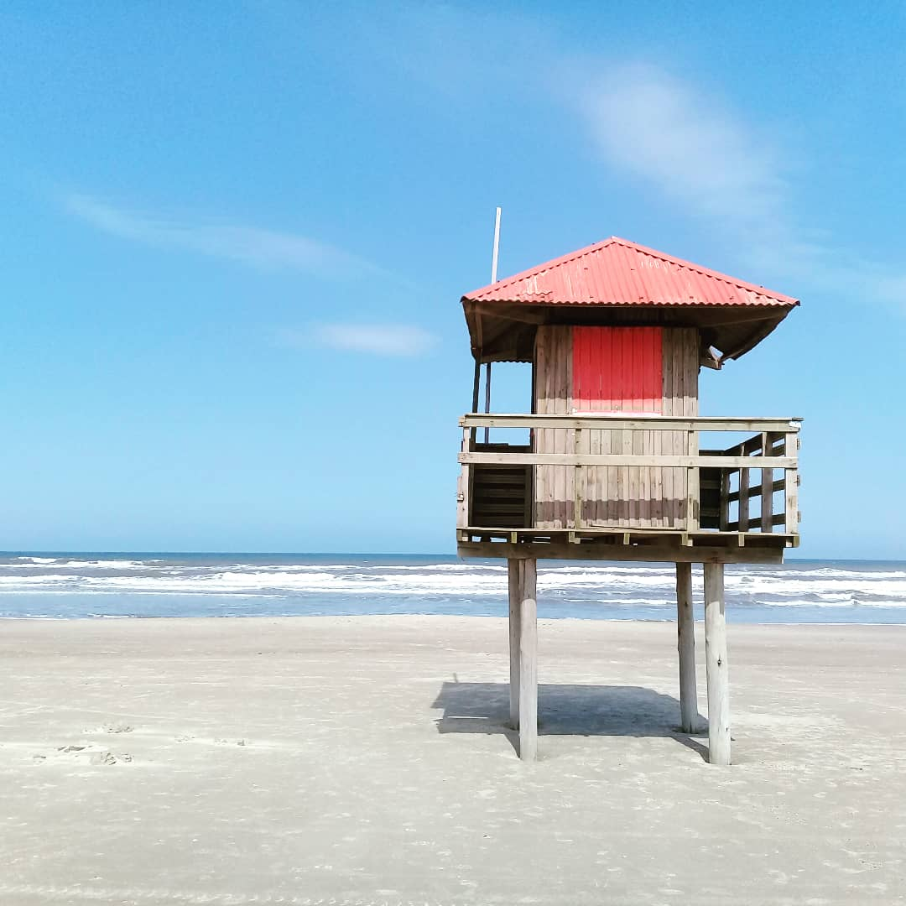

HOME
Olá! Seja bem vindo!
Sou o Girlei e esta é uma página construída para apresentar meu perfil profissional.APRESENTAÇÃO

Nome: Girlei Both de Matos
Data de nascimento: 31 de dezembro de 1987
Idade:
Possuo longa experiência na área Administrativa/Financeira e almejo aliar esses
conhecimentos com a área de Programação e desenvolvimento de softwares (TI),
aprimorando skills em programação e visando o crescimento profissional. Busco o acréscimo de
qualidade na execução de tarefas a fim de atingir os objetivos, realizando-os com organização e
planejamento.
Tenho como objetivos pessoais o desenvolvimento do conhecimento profissional, bem como, o aprimoramento de habilidades com a prática em novas experiências.
Até o momento tive a oportunidade de aprender em três grandes áreas de pesquisa e atuação, sendo: Administração, Saúde e Tecnologia.
Existem outras áreas que também tenho interesse como Artes Visuais, Investimentos entre outras.
Acredito ser importante mostrar o background que possibilitou-me construir meu perfil pessoal e profissional.
"Em minha vida existe uma máxima que é a Educação, assim, sempre procurei fazer cursos em diversas áreas e, certamente, continuarei buscando aprender. Acredito que aprender é uma força motriz que nos motiva a melhorar constantemente."
Tenho como objetivos pessoais o desenvolvimento do conhecimento profissional, bem como, o aprimoramento de habilidades com a prática em novas experiências.
Até o momento tive a oportunidade de aprender em três grandes áreas de pesquisa e atuação, sendo: Administração, Saúde e Tecnologia.
Existem outras áreas que também tenho interesse como Artes Visuais, Investimentos entre outras.
Acredito ser importante mostrar o background que possibilitou-me construir meu perfil pessoal e profissional.
"Em minha vida existe uma máxima que é a Educação, assim, sempre procurei fazer cursos em diversas áreas e, certamente, continuarei buscando aprender. Acredito que aprender é uma força motriz que nos motiva a melhorar constantemente."
FORMAÇÕES
Técnico em Desenvolvimento de Sistemas
Instituição: SENAC/RS - Serviço Nacional de Aprendizagem ComercialPeríodo: 04/04/2022 a 22/01/2024 (Em andamento)
Ensino: Técnico
Módulo I
-Planejar o desenvolvimento de software-Desenvolver algoritmos
-Auxiliar na modelagem e manipulação de banco de dados
-Auxiliar na administração de banco de dados
-Projeto integrador I
Módulo II
-Desenvolver código orientado a objetos-Auxiliar na elaboração de projeto de sistema orientado a objeto
-Desenvolver interface para melhor experiência do usuário.
-Desenvolver e organizar interface gráfica para aplicações desktop
-Programar aplicativos computacionais com integração de banco de dados para desktop
-Projeto integrador II
Módulo III
-Gerenciar a configuração e versionamento de Software-Executar testes e realizar melhorias em aplicativos computacionais
-Desenvolver e organizar interface de usuário e elementos visuais para aplicações web. (front-end)
-Programar aplicativos computacionais com integração de banco de dados para web. (back-end)
-Projeto integrador III
Carga horária total do curso: 1.200 horas.
Técnico em Administração
Instituição: FUNDATEC – Escola ProfissionalPeríodo: 01/03/2015 a 01/12/2016
Ensino: Técnico
Módulo I
Total de Horas: 316Produção e Logística Organizacionais
Língua Portuguesa: Comunicação Oral e Escrita
Conceitos e Princípios de Administração
Recursos Humanos nas Organizações
Finanças Organizacionais
Informática Básica
Planejamento e Diagnóstico
Matemática Aplicada e Estatística Básica
Fundamentos da Qualidade
Módulo II
Total de Horas: 340Gestão de Projetos
Língua Estrangeira
Língua Portuguesa: Comunicação Empresarial
Administração Financeira
Matemática Financeira
Gestão de Riscos
Marketing
Contabilidade Aplicada
Legislação Tributária e Empresarial
Metodologia Científica
Módulo III
Total de Horas: 344Empreendedorismo
Legislação
Administração de Recursos Humanos
Sustentabilidade e Gestão Ambiental
Sistemas de Informação Gerencial
Segurança do Trabalho e Saúde Ocupacional
Gestão de Processos – Indicadores da Qualidade
Organização, Sistemas e Métodos
Criatividade e Inovação
Tutoria para Trabalho de Conclusão do Curso
Carga Horária Total do Curso: 1000 horas
Bacharelado em Educação Física
Instituição: UFRGS – Universidade Federal do Rio Grande do SulPeríodo: Ingresso em 2010/2 | Concluído em 2014/2
Ensino: Superior
"O curso gradua bacharéis e licenciados aptos a atuar nos campos da prevenção, promoção,
proteção e reabilitação da saúde, da formação cultural, da educação e reeducação motora, do
rendimento físico-esportivo, do lazer, da gestão de empreendimentos relacionados às atividades
físicas, recreativas e esportivas, além de outros campos que oportunizem ou venham a oportunizar
a prática destas atividades, em ambientes diferenciados da rede escolar formal." Fonte:
UFRGS
Data de Expedição do Diploma: 24/02/2015
Diploma registrado sob o nº 585, livro G-13, fl 98, em 24 de fevereiro de 2015, por delegação de competência do Ministério da Educação, nos termos da Lei n° 9.394, de 20 de dezembro de 1996, e do Decreto n° 9.235, de 15 de dezembro de 2017.
Total de horas cursadas com aprovação na UFRGS: 3645h
Processo Seletivo: Vestibular
Data de Conclusão de Curso: 20/12/2014Data de Expedição do Diploma: 24/02/2015
Diploma registrado sob o nº 585, livro G-13, fl 98, em 24 de fevereiro de 2015, por delegação de competência do Ministério da Educação, nos termos da Lei n° 9.394, de 20 de dezembro de 1996, e do Decreto n° 9.235, de 15 de dezembro de 2017.
Total de horas cursadas com aprovação na UFRGS: 3645h
Atestado de classificação Final de Curso:
"A Universidade Federal do Rio Grande do Sul atesta, para os devidos fins, que GIRLEI BOTH DE MATOS concluiu o curso de graduação em EDUCAÇÃO FÍSICA, currículo BACHARELADO EM EDUCAÇÃO FÍSICA, desta Universidade, no 2º semestre de 2014, colação de grau em 12 de fevereiro de 2015, e obteve o 8º lugar entre os 36 formandos na classificação final do curso, com média final 8,882 (escala de 0 a 10)."CURSOS
Intensivo de Carreira Tech
Instituição: T.EXPERT
O curso prepara para os desafios atuais do Mercado de Trabalho na área de
Tecnologia e oferece orientações sobre como focar em autodesenvolvimento.
Concluído em 14/12/2022
"Foram 12 módulos e 96 aulas com ótimas orientações de preparação para os desafios atuais do Mercado de Trabalho na área de Tecnologia, além de dicas sobre autodesenvolvimento que serão muito significativas em minha busca por uma oportunidade de trabalho."
Concluído em 14/12/2022
"Foram 12 módulos e 96 aulas com ótimas orientações de preparação para os desafios atuais do Mercado de Trabalho na área de Tecnologia, além de dicas sobre autodesenvolvimento que serão muito significativas em minha busca por uma oportunidade de trabalho."
Do Zero ao App: Como criar um app de sucesso!
Instituição: AUTOU
Orientações para a criação de uma aplicação web bem básica, utilizando a plataforma
Bubble.io.
Lives nos dias 7, 8 e 9/11/2022
"Recentemente participei de um desafio, resolvendo um CASE em um processo seletivo, onde deveria ser desenvolvido um aplicativo de um programa de reações no qual os colaboradores de uma empresa poderiam enviar reações positivas e pontos uns para os outros.
O projeto que desenvolvi chama-se "Positive Reactions" (Nessa plataforma é possível enviar e receber reconhecimentos - 'Reações', podendo assim, contribuir para um ambiente em equipe, com mais interação e apoio.)
Compartilho abaixo os links, do App (criado usando o Bubble) e do material gráfico (criado no Canva)."
APP ... Acessar
MATERIAL GRÁFICO ... Acessar
Lives nos dias 7, 8 e 9/11/2022
"Recentemente participei de um desafio, resolvendo um CASE em um processo seletivo, onde deveria ser desenvolvido um aplicativo de um programa de reações no qual os colaboradores de uma empresa poderiam enviar reações positivas e pontos uns para os outros.
O projeto que desenvolvi chama-se "Positive Reactions" (Nessa plataforma é possível enviar e receber reconhecimentos - 'Reações', podendo assim, contribuir para um ambiente em equipe, com mais interação e apoio.)
Compartilho abaixo os links, do App (criado usando o Bubble) e do material gráfico (criado no Canva)."
APP ... Acessar
MATERIAL GRÁFICO ... Acessar
DEV EM DOBRO - RHD TECH INFORMATICA LTDA
Instituição: MAPADEV WEEKNÍVEL 1️
Parte I - AS MAIORES RECOMPENSAS DA ÁREA DE PROGRAMAÇÃOParte II - HTML: A BASE DO FRONTEND, Iniciando o projeto
NÍVEL 2️
Parte I - O ATALHO DO MAPA: PRIMEIRA VAGA EM 7 MESESParte II - IMPLEMENTANDO CSS NO PROJETO
NÍVEL 3
Parte I - MAPADEV- Planejamento, Prática e Marketing PessoalParte II - IMPLEMENTANDO JavaScript no projeto - Mini Portfólio
Parte III - UPLOAD NO GitHub!
Lives nos dias 10, 12, 14 e 16/10/2022
Link da página do projeto finalizado ... Acessar
Automação de Sistemas
Instituição: IFRS - INSTITUTO FEDERALCurso de Extensão
Automação e Projeto; Robótica e Indústria; Máquinas e Redes.Carga-horária: 30 horas
25/08/2022 a 10/10/2022
Visual Studio 2019 Avançado
Instituição: UDEMYEngenharia de Software
Visual Basic com MysqlO curso de Visual Studio 2019 Avançado possui 60 vídeo aulas, ele pode ser acompanhado também com as versões 2015 ou 2017, neste curso o aluno vai aprender a trabalhar com a plataforma usando recursos avançados como upload de imagens, componentes como timers, relacionamento entre tabelas, relatórios e muito mais. (Nível Especialista)
Carga-horária: 6 horas
11/01/2021
Programador Back End - Visual Studio 2019
Instituição: UDEMYEngenharia de Software
Visual Basic e MsyqlO curso de Programador Back End com Visual Studio 2019 e Visual Basic possui 60 vídeo aulas, ele pode ser acompanhado também com as versões 2015 ou 2017, neste curso o aluno vai aprender a trabalhar com a plataforma usando a linguagem Visual Basic como programador back end, pegando um projeto desenvolvido por um front end e aplicamos a comunicação com o banco de dados mysql onde fazemos todo o crud inserindo dados, editando, criando consultas e muito mais. (Nível Intermediário)
Carga-horária: 5,5 horas
29/06/2019
Curso de Visual Studio 2019 - Desenvolvimento Front End
Instituição: UDEMYEngenharia de Software
Programando em Visual BasicO curso de Visual Studio 2019 possui 65 vídeo aulas, ele pode ser acompanhado também com as versões 2015 ou 2017, neste curso o aluno vai aprender a trabalhar com a plataforma usando a linguagem Visual Basic em projetos do tipo windows forms. (Nível Iniciante)
Carga-horária: 6 horas
10/06/2019
Programa Estadual de Formação e Qualificação na Área Cultural
Instituição: SEDAC/RS - Secretaria de Estado da Cultura do Rio Grande do Sul
Gestão Pública de Cultura: desafios dos processos participativos
24/10/2021 a 26/10/2021
Conheça em Detalhes o Sistema Estadual de Fomento
29/11/2021
Direitos Inalienáveis, ODS e Cultura
02/12/2021
24/10/2021 a 26/10/2021
Conheça em Detalhes o Sistema Estadual de Fomento
29/11/2021
Direitos Inalienáveis, ODS e Cultura
02/12/2021
Rotinas Administrativas
Instituição: MICROLINS - Formação Profissional
Ensino Médio Profissionalizante (Pós-médio)
Carga horária: 72h
18/08/2008 a 02/03/2009
Carga horária: 72h
18/08/2008 a 02/03/2009
Curso Profissionalizante
Instituição: QI – Escolas e Faculdades
Ensino Médio Profissionalizante (Pós-médio)
Introdução a informática, word, windows, excel, power point, criação de home page,, conceitos em hardware, assistente administrativo, qualidade total, assistente de departamento pessoal, técnicas de negociação, assistente de contabilidade, marketing pessoal.
Carga horária: 162h
11/08/2006 a 31/03/2007
Introdução a informática, word, windows, excel, power point, criação de home page,, conceitos em hardware, assistente administrativo, qualidade total, assistente de departamento pessoal, técnicas de negociação, assistente de contabilidade, marketing pessoal.
Carga horária: 162h
11/08/2006 a 31/03/2007
Integrado de Ambiente Windows XP
Instituição: EURODATA – Cursos de Informática
04/11/2004 a 01/11/2005
Oficina de Plano de Marketing
Instituição: SEBRAE/RS - Serviço Brasileiro de Apoio às Micro e Pequenas Empresas
Carga horária: 8h
17/07/2012 a 19/07/2012
17/07/2012 a 19/07/2012
Curso de Mangá
Instituição: AAMARGS - Associação dos Amigos do MARGS
Criação de história em quadrinhos simplificada; elementos fundamentais de desenho: figura
humana, proporções, perspectiva, luz e sombra, ângulos, etc.; argumento e roteiro.
Carga horária: 32h
Registro: 507 - SEDAC/RS
20/05/2006
Carga horária: 32h
Registro: 507 - SEDAC/RS
20/05/2006
Contabilidade e Departamento de Pessoal
Instituição: EURODATA
Qualificação Profissional
28/04/2006 a 16/06/2006
10/03/2006 a 12/05/2006
28/04/2006 a 16/06/2006
10/03/2006 a 12/05/2006
SIC 2013
Instituição: UFRGS
Salão UFRGS 2013: SIC - XXV SALÃO DE INICIAÇÃO CIENTÍFICA DA UFRGS
Participação no Salão de Iniciação Científica SIC da UFRGS, realizado no período de 21/10/2013 a 25/10/2013, com carga horária de 5 horas.
Participação no Salão de Iniciação Científica SIC da UFRGS, realizado no período de 21/10/2013 a 25/10/2013, com carga horária de 5 horas.
SIC 2011
Instituição: UFRGS
SIC2011 - XXIII SALÃO DE INICIAÇÃO CIENTÍFICA DA UFRGS
Participação no Salão de Iniciação Científica SIC da UFRGS, realizado no período de 03/10/2011 a 07/10/2011, com carga horária de 4 horas.
Participação no Salão de Iniciação Científica SIC da UFRGS, realizado no período de 03/10/2011 a 07/10/2011, com carga horária de 4 horas.
SIC 2010
Instituição: UFRGS
SIC 2010 - XXII SALÃO DE INICIAÇÃO CIENTÍFICA DA UFRGS
Participação no Salão de Iniciação Científica SIC da UFRGS, realizado no período de 18/10/2010 a 22/10/2010, com carga horária de 4 horas.
Participação no Salão de Iniciação Científica SIC da UFRGS, realizado no período de 18/10/2010 a 22/10/2010, com carga horária de 4 horas.
EXPERIÊNCIAS
ASSISTENTE ADMINISTRATIVO
Empresa: AAMARGS - Associação dos Amigos do Museu de Arte do Rio Grande do Sul Ado Malagoli
20/11/2016 a 31/07/2022 (Meio período - total 5 anos 9 meses)
- Controle financeiro (prestação de contas a contabilidade, conferência de Notas Fiscais, controle de contas à pagar);
- Administrativo (elaboração de termos, contratos, ofícios, recibos, Atas etc.);
- Logística (compra de materiais de expediente e equipamentos, locação de materiais para eventos);
- Gestão de sócios (cadastro, boletos, carteirinhas, recibos etc.);
- Gestão de cessionários (boletos, cálculos de consumo, renovação de contrato etc.);
- Gestão de cursos (contato com professores, agendamentos, cobrança pelo uso de espaço, emissão de certificados etc.);
- Gestão de uso de espaço (envio e verificação de informações dos eventos, agendamentos, cobrança pelo uso de espaço etc.);
- Comunicação (divulgação de eventos da Associação: cursos, palestras, feiras de arte, concertos, confraternizações. Mídias: Mailing, Website e Facebook; Whatsapp e telefone);
- Projetos (Auxílio na gestão e controle financeiro de projetos culturais - Leis de incentivo (BRA) e Grants (EUA));
- Cadastro de documentários na plataforma da ANCINE.
Competências: Gestão de associações · Conciliação bancária · Administrador de banco de dados · Processos de compras · Elaboração e preparação de documentos · Atualização de sites · Administração de subsídios · Comunicação · Visual Basic · Microsoft Excel · Contabilidade · Gestão de projetos · Administração financeira · Finanças
- Controle financeiro (prestação de contas a contabilidade, conferência de Notas Fiscais, controle de contas à pagar);
- Administrativo (elaboração de termos, contratos, ofícios, recibos, Atas etc.);
- Logística (compra de materiais de expediente e equipamentos, locação de materiais para eventos);
- Gestão de sócios (cadastro, boletos, carteirinhas, recibos etc.);
- Gestão de cessionários (boletos, cálculos de consumo, renovação de contrato etc.);
- Gestão de cursos (contato com professores, agendamentos, cobrança pelo uso de espaço, emissão de certificados etc.);
- Gestão de uso de espaço (envio e verificação de informações dos eventos, agendamentos, cobrança pelo uso de espaço etc.);
- Comunicação (divulgação de eventos da Associação: cursos, palestras, feiras de arte, concertos, confraternizações. Mídias: Mailing, Website e Facebook; Whatsapp e telefone);
- Projetos (Auxílio na gestão e controle financeiro de projetos culturais - Leis de incentivo (BRA) e Grants (EUA));
- Cadastro de documentários na plataforma da ANCINE.
Competências: Gestão de associações · Conciliação bancária · Administrador de banco de dados · Processos de compras · Elaboração e preparação de documentos · Atualização de sites · Administração de subsídios · Comunicação · Visual Basic · Microsoft Excel · Contabilidade · Gestão de projetos · Administração financeira · Finanças
ESTÁGIO ADM./FINANCEIRO
Empresa: AAMARGS - Associação dos Amigos do Museu de Arte do Rio Grande do Sul Ado Malagoli
18/05/2015 a 18/11/2016 (Meio período - 1 ano 7 meses)
Pagamento de contas e fornecedores, emissão de boletos, contratos, termos entre outros documentos. Controle e construção de planilhas de gerenciamento financeiro (alinhadas com a contabilidade), além de realização de conciliação bancária. Comunicação com os associados e interessados em associar-se. Gestão de cursos, organização, comunicação, pagamentos etc. Compras de materiais administrativos. Entre outras atividades que estavam ligadas a manutenção do Museu por intermédio da Associação de Amigos.
Competências: Administração · Comunicação · Visual Basic · Microsoft Excel · Contabilidade · Gestão de projetos
Pagamento de contas e fornecedores, emissão de boletos, contratos, termos entre outros documentos. Controle e construção de planilhas de gerenciamento financeiro (alinhadas com a contabilidade), além de realização de conciliação bancária. Comunicação com os associados e interessados em associar-se. Gestão de cursos, organização, comunicação, pagamentos etc. Compras de materiais administrativos. Entre outras atividades que estavam ligadas a manutenção do Museu por intermédio da Associação de Amigos.
Competências: Administração · Comunicação · Visual Basic · Microsoft Excel · Contabilidade · Gestão de projetos
APOIO ADM./FINANCEIRO
Empresa: HOTEL PRAÇA DA MATRIZ
18/01/2017 a 29/06/2017 (Temporário - 6 meses)
Suporte administrativo - Controle e construção de planilhas financeiras, fluxo de caixa, pagamento de despesas mensais, fornecedores, guias de tributos e encargos sociais. Auxílio na realização de reservas. Apoio na conciliação bancária.
Competências: Gestão hoteleira · WordPress · Administrador de banco de dados · Atualização de sites · Microsoft Excel · Contabilidade · Administração financeira
Suporte administrativo - Controle e construção de planilhas financeiras, fluxo de caixa, pagamento de despesas mensais, fornecedores, guias de tributos e encargos sociais. Auxílio na realização de reservas. Apoio na conciliação bancária.
Competências: Gestão hoteleira · WordPress · Administrador de banco de dados · Atualização de sites · Microsoft Excel · Contabilidade · Administração financeira
FISCAL DE CONCURSO
Empresa: Fundatec
Participação da Equipe de execução de Concurso na empresa Fundatec.
Responsabilidades de aplicar e controlar o ambiente da realização das provas. Fazer-se cumprir as regras presentes nos editais. Esclarecimento de dúvidas e orientações relacionadas a dinâmica de aplicação das provas.
Competências: Regras de validação · Aplicação da lei
Concurso Público 568 - Assistente Administrativo
Prefeitura Municipal de Porto Alegre/RS
29/03/2016 (Temporário)
Concurso Edital 353/2015 - Agente Administrativo
Ministério Público
27/05/2016 (Temporário)
Responsabilidades de aplicar e controlar o ambiente da realização das provas. Fazer-se cumprir as regras presentes nos editais. Esclarecimento de dúvidas e orientações relacionadas a dinâmica de aplicação das provas.
Competências: Regras de validação · Aplicação da lei
Concurso Público 568 - Assistente Administrativo
Prefeitura Municipal de Porto Alegre/RS
29/03/2016 (Temporário)
Concurso Edital 353/2015 - Agente Administrativo
Ministério Público
27/05/2016 (Temporário)
ESTÁGIO PROFISSIONAL EM SAÚDE E LAZER
Empresa: PROJETO CELARI – UFRGS
31/03/2014 a 20/07/2014 (5 meses)
Carga Horária: 150
Elaboração e aplicação de atividades físicas/exercícios nas modalidades de Jogging Aquático (modalidade de exercício realizada em uma piscina funda. O participante utiliza um colete flutuador que o mantém na posição vertical e não permite o apoio do pé no fundo da piscina. Durante o exercício, o aluno simula o movimento de uma caminhada e/ou corrida) e Musculação (conjunto de exercícios que visam o fortalecimento e o crescimento dos músculos) no Centro de Estudos de Lazer e Atividade Física do Idoso CELARI que é um Programa de Extensão Universitária da UFRGS.
Competências: Promoção da saúde · Educação física · Terapia aquática · Musculação · Prescrição de exercícios
Carga Horária: 150
Elaboração e aplicação de atividades físicas/exercícios nas modalidades de Jogging Aquático (modalidade de exercício realizada em uma piscina funda. O participante utiliza um colete flutuador que o mantém na posição vertical e não permite o apoio do pé no fundo da piscina. Durante o exercício, o aluno simula o movimento de uma caminhada e/ou corrida) e Musculação (conjunto de exercícios que visam o fortalecimento e o crescimento dos músculos) no Centro de Estudos de Lazer e Atividade Física do Idoso CELARI que é um Programa de Extensão Universitária da UFRGS.
Competências: Promoção da saúde · Educação física · Terapia aquática · Musculação · Prescrição de exercícios
Monitoria Acadêmica: Dinamização de Programas Recreativos e de Lazer
Empresa: UFRGS
À Distância, utilizando tecnologia EAD - Remunerada
Disciplina: Dinamização de Programas Recreativos e de Lazer
(Temporário - 1 ano 10 meses)
Período: de 05/03/2014 a 19/07/2014
Período: de 04/08/2014 a 20/12/2014
Período: de 12/08/2013 a 20/12/2013
Período: de 20/03/2013 a 20/07/2013
Competências: Controle de projetos · Moodle · Tecnologias educacionais · Educação à distância · Planejamento de aulas
*Conformidade com o estabelecido no decreto nº 85.862/81 e Art 84 da Lei nº 9.394, de 20 de dezembro de 1996, com carga horária de 20 horas semanais. Auxílio na criação e aplicação das atividades e exercícios realizados em aula durante o semestre letivo.
Disciplina: Dinamização de Programas Recreativos e de Lazer
(Temporário - 1 ano 10 meses)
Período: de 05/03/2014 a 19/07/2014
Período: de 04/08/2014 a 20/12/2014
Período: de 12/08/2013 a 20/12/2013
Período: de 20/03/2013 a 20/07/2013
Competências: Controle de projetos · Moodle · Tecnologias educacionais · Educação à distância · Planejamento de aulas
*Conformidade com o estabelecido no decreto nº 85.862/81 e Art 84 da Lei nº 9.394, de 20 de dezembro de 1996, com carga horária de 20 horas semanais. Auxílio na criação e aplicação das atividades e exercícios realizados em aula durante o semestre letivo.
Monitoria Acadêmica: Futebol Fundamentos
Empresa: UFRGS
Presencial - Voluntária
Disciplina: Futebol Fundamentos (Temporário - 4 meses)
Período: de 30/09/2011 a 21/12/2011
Competências: Treinamento de futebol · Planejamento de aulas · Prescrição de exercícios
*Conformidade com o estabelecido no decreto nº 85.862/81 e Art 84 da Lei nº 9.394, de 20 de dezembro de 1996, com carga horária de 20 horas semanais. Auxílio na criação e aplicação das atividades e exercícios realizados em aula durante o semestre letivo.
Disciplina: Futebol Fundamentos (Temporário - 4 meses)
Período: de 30/09/2011 a 21/12/2011
Competências: Treinamento de futebol · Planejamento de aulas · Prescrição de exercícios
*Conformidade com o estabelecido no decreto nº 85.862/81 e Art 84 da Lei nº 9.394, de 20 de dezembro de 1996, com carga horária de 20 horas semanais. Auxílio na criação e aplicação das atividades e exercícios realizados em aula durante o semestre letivo.
HABILIDADES
Inglês, Espanhol e Francês
Site/App: DUOLINGO
Portugês ... Fluente
Inglês ... Intermediário
Espanhol ... Intermediário
Francês ... Básico
Site e aplicativo móvel de aprendizado de idiomas. Com exercícios práticos de vocabulário, gramática e pronúncia usando repetição espaçada. Os exercícios podem incluir tradução escrita, compreensão de leitura e fala e histórias curtas.
Estatísticas (em 18/10/2022): 725 Dias seguidos
Inglês ... Intermediário
Espanhol ... Intermediário
Francês ... Básico
Site e aplicativo móvel de aprendizado de idiomas. Com exercícios práticos de vocabulário, gramática e pronúncia usando repetição espaçada. Os exercícios podem incluir tradução escrita, compreensão de leitura e fala e histórias curtas.
Estatísticas (em 18/10/2022): 725 Dias seguidos
Inglês
Instituição: IFRS - INSTITUTO FEDERAL
Instituto Federal de Educação, Ciência e Tecnologia do Rio Grande do Sul
Inglês 1
Conteúdo: Identificação e Caracterização Pessoal; Localização no Tempo e no Espaço.
Carga-horária: 30 horas
21/11/2021 a 14/12/2021
Inglês 2
Conteúdo: Meios de Transporte; Família; Rotina e Hábitos – Em Casa.
Carga-horária: 30 horas
14/12/2021 a 30/01/2022
Inglês 1
Conteúdo: Identificação e Caracterização Pessoal; Localização no Tempo e no Espaço.
Carga-horária: 30 horas
21/11/2021 a 14/12/2021
Inglês 2
Conteúdo: Meios de Transporte; Família; Rotina e Hábitos – Em Casa.
Carga-horária: 30 horas
14/12/2021 a 30/01/2022
Tecnologia
IDE: Visual Studio, VS Code, Apache NetBeansLinguagens: HTML, CSS, JavaScript, Java, Visual Basic .NET, VBA Excel, C# ...
Banco de dados: MySQL e MongoDB
Sistemas operacionais: Linux e Windows; Microsoft Office e Libre Office
Ferramentas: Canva, Trello, Figma, Github, Bubble, Wordpress, Sketchup, Mailchimp, Inkscape, GIMP, entre outras...
Fotografia

Desenho
Escrita:
Em desenvolvimento...
Edição 3D
PROJETOS
GESTÃO ESPORTIVA: Estudo de caso nos clubes Sport Club Internacional e Grêmio Foot-Ball Porto Alegrense.
Instituição: FundatecTipo: TCC
Trabalho de conclusão de curso apresentado como requisito parcial para a obtenção do grau de
Técnico em Administração pela Escola Profissional Fundatec.
Concluído em 21 de dez de 2016
Concluído em 21 de dez de 2016
Gestão no futebol: marketing e sua estruturação, procedimentos organizacionais utilizados em quatro dos principais clubes de futebol do RS.
Instituição: UFRGS-LUMETipo: TCC
Depoimento de Fábio Ritter
Instituição: UFRGS-LUMETipo: Entrevista
Gestão no futebol; importância que o Grêmio atribui ao marketing esportivo; atribuições do
departamento de marketing do clube; perfil do profissional de marketing; critérios e estratégias
para o departamento de marketing fidelização do torcedor; perspectivas futuras para o marketing
esportivo.
15 de set de 2014
Clube: Grêmio Foot-Ball Porto Alegrense
15 de set de 2014
Clube: Grêmio Foot-Ball Porto Alegrense
Depoimento de Adauri Régis Gonçalves da Silveira
Instituição: UFRGS-LUMETipo: Entrevista
Gestão no futebol; importância que o Sport Clube Internacional atribui ao marketing esportivo;
atribuições do departamento de marketing do clube; perfil do profissional de marketing;
critérios e estratégias para o departamento de marketing fidelização do torcedor; perspectivas
futuras para o marketing esportivo.
2 de set de 2014
Clube: Sport Clube Internacional
2 de set de 2014
Clube: Sport Clube Internacional
Depoimento de Stefano Ditadi
Instituição: UFRGS-LUMETipo: Entrevista
Gestão no futebol; importância que o Esporte Clube Juventude atribui ao marketing esportivo;
atribuições do departamento de marketing do clube; perfil do profissional de marketing;
critérios e estratégias para o departamento de marketing fidelização do torcedor; perspectivas
futuras para o marketing esportivo.
1 de set de 2014
Clube: Esporte Clube Juventude
1 de set de 2014
Clube: Esporte Clube Juventude
Depoimento de Leonardo Antunes
Gestor do clube: S.E.R. CaxiasInstituição de publicação: UFRGS-LUME
Tipo: Entrevista
Gestão no futebol; importância que o S.E.R. Caxias atribui ao marketing esportivo; atribuições
do departamento de marketing do clube; perfil do profissional de marketing; critérios e
estratégias para o departamento de marketing fidelização do torcedor; perspectivas futuras para
o marketing esportivo.
1 de set de 2014
Clube: Sociedade Esportiva e Recreativa Caxias do Sul
1 de set de 2014
Clube: Sociedade Esportiva e Recreativa Caxias do Sul
CONTATOS
E-mail: girlei.both@yahoo.com.br
Telefone: +55 51 991 492 962
Residência: Brasil-BRA | Porto Alegre/RS